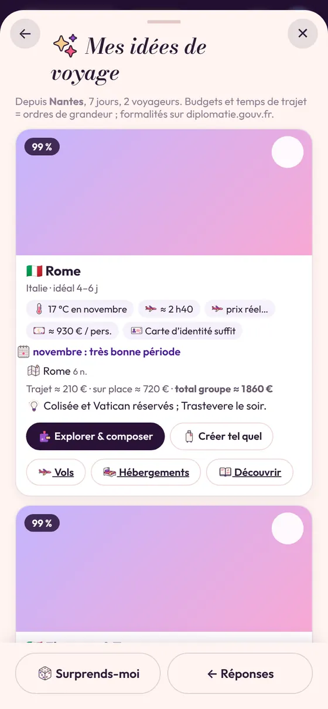

Quand partir ?
Les meilleures périodes pour Philippines (Palawan) : de décembre à mai. Les températures maximales moyennes vont d’environ 30 °C en janvier à 33 °C en avril.
Températures maximales moyennes en °C, mois par mois. En couleur : les meilleures périodes.
Combien de jours ?
Compter 10 à 16 jours pour en profiter sans courir. Voici un itinéraire type de 9 nuits :
- J1–J4 · El Nido 4 nuits
- J5–J7 · Coron 3 nuits
- J8–J9 · Puerto Princesa 2 nuits
Quel budget ?
Sur place, en voyage « confort », compter environ 60 € par jour et par personne (hébergement, repas, transports locaux et visites), soit environ 600 à 960 € par personne pour 10 à 16 jours, hors trajet aller-retour.
- En version économique : environ 40 € par jour.
- En version petit luxe : environ 110 € par jour.
Ordres de grandeur pour comparer les destinations : les prix réels dépendent de la saison et des réservations.
Papiers et formalités
- Passeport demandé (souvent valable plusieurs mois après le retour).
- Assurance voyage couvrant les frais médicaux et le rapatriement, vivement conseillée.
- Prises électriques : Type A/B : un adaptateur est nécessaire avec des appareils français.
Règles générales pour un court séjour touristique, pour un voyageur français. Vérifiez toujours avant de partir sur diplomatie.gouv.fr (Conseils aux voyageurs) ou le site officiel du pays.
Le conseil
Island hopping à El Nido, épaves de Coron, rivière souterraine de Puerto Princesa.
Préparer ce voyage dans Vezoria
Dans Vezoria, « Je ne sais pas encore où aller » propose Philippines (Palawan) quand la destination correspond à tes dates, ton budget et tes envies, avec cet itinéraire type. « Créer tel quel » prépare tout le voyage d’un coup : le programme jour par jour, un hébergement par étape et les trajets. Il ne reste qu’à réserver, à plusieurs.

Partir à plusieurs ?
Programme jour par jour, réservations, comptes partagés, valise et souvenirs : prépare Philippines (Palawan) avec tes compagnons dans un seul carnet.
🔗 Pour réserver : les vols · un hébergement à El Nido · les visites
Questions fréquentes
Quelle est la meilleure période pour partir à Philippines (Palawan) ?
Les meilleures périodes sont de décembre à mai.
Combien de jours faut-il pour Philippines (Palawan) ?
Compter 10 à 16 jours.
Quel budget prévoir pour Philippines (Palawan) ?
Environ 60 € par jour et par personne sur place en voyage confort, hors trajet aller-retour (ordre de grandeur).
Quels papiers pour Philippines (Palawan) ?
Passeport demandé (souvent valable plusieurs mois après le retour). À vérifier sur diplomatie.gouv.fr avant le départ.